iPhone・Androidのシャッター音を消す方法

国内発売のスマホは原則シャッター音強制
日本と韓国で発売されたスマホは大半の機種でシャッター音が強制的に鳴る。 これはAndroidスマホだけでなくiPhoneでも同様で、マナーモードで無音になったり設定から無音化できる海外発売のスマホと違い、音量設定に関係なく強制的にシャッター音が鳴ってしまう。 そのために海外版を買おうとしても家電量販店や携帯キャリアでの販売はなく、正規販売店で購入することはできない。 また、海外版はFeliCa非搭載や技適未取得など、日本向けに最適化されていないことでのデメリットも発生する。 サードパーティ製のアプリを使うという手段もあるが、それらのアプリはその機種に最適化されたものではなく、品質が悪かったり一部機能が使えなかったりする。 しかし、一部機種では設定を変更したり条件付きでシャッター音の無音化が可能である。 ここからは対象機種とその方法について解説する。
対象機種
iPhone
 Appleより引用
Appleより引用
実はiPhoneでも海外版であればシャッター音は無音化できる。 海外版では先程述べたデメリットがあるのではと思う人もいるだろうが、iPhoneに関しては例外である。 まず、まめこmobileやイオシスなどのショップで香港版のiPhoneが未使用の状態で数多く販売されているため、他のスマホと比べて海外版が比較的入手しやすい。 保証の面でもAppleはiPhoneをアクティベートした日から1年間は世界中のApple StoreまたはApple正規サービスプロバイダで保証が受けられる。 さらにiPhoneは全世界のモデルでFeliCaが搭載され、カナダ版、グアム版、メキシコ版、サウジアラビア版などには技適もつく。
方法
1.消音モードまたはメディアの音量を0にする

消音モードまたはメディアの音量が0のときはシャッター音が消える。
デメリット
･国内版と比べて割高になる
海外版を利用するデメリットはないものの、国内版と比べて割高になる。 また、携帯会社での2年レンタルや特価のようなものももちろんない。
Google Pixel
Pixelの標準カメラアプリでのシャッター音無音化はroot化しない限り不可能である。 そこで、標準カメラアプリのMod "GCam" を使うという方法がある。 Pixelのカメラアプリは非常に優秀で、ハードウェアが弱くてもソフトウェアの力できれいな写真が撮れる。 そのため海外の開発者たちがそのアプリを他のスマホでも使えるように移植したアプリがGCamとなる。 ここではこのGCamを標準カメラアプリの代わりに使用してシャッター音を消す。
方法
1.Google Camera Portsで任意のapkをダウンロードしてインストールする。
以下のリンクからGCamのapkをダウンロードしてインストールする。 中には正常に動作しないものもあるので、1つ1つ試してみる。
2.カメラアプリを起動する
3.設定画面を開く
4. "カメラの音" をオフにする
あとはもともとある標準のカメラアプリを無効化するなどしてGCamを起動しやすいようにするといいかもしれない。
デメリット
･電源ボタン2回押しでカメラ起動できない
GCamは標準カメラアプリベースだがあくまでModアプリのため、電源ボタン2回押しでカメラ起動には対応しない。
･アプリを手動で更新する必要がある
apkでインストールしているため自動でアプリが更新されず、再びapkをダウンロードして手動で更新する必要がある。
･開発者の違いに注意する必要がある
アプリを更新する際に、もともとインストールしていたものと異なる開発者のアプリをインストールしようとするとインストールできなかったり、仕様が変わったりする。
Galaxy
 Samsungより引用
Samsungより引用
Galaxyでは "SetEdit" というアプリを使ってシステム設定を変更するという方法があったが、Android 14で塞がれてしまった。 そこで、SetEditで適用していた変更をadbコマンドを使って実行する。 adbコマンドはPCで実行する方法とスマホで実行する方法の2通りある。 ここではPCを用いた方法を解説する。
方法
1.PCにadbを導入する
2.Galaxyで設定アプリを開く

3. "端末情報" をタップする

4. "ソフトウェア情報" をタップする

5. "ビルド番号" を7回タップし、パスワードを入力する
これにより、開発者オプションが有効になる。

6. "OK" をタップする

7.設定アプリの "開発者向けオプション" をタップする

8. "USBデバッグ" をオンにする

9. "OK" をタップする

10.PCとGalaxyをUSBケーブルで接続する

11. "許可" をタップする

12.PCのターミナルでシャッター音の動作を海外仕様にするadbコマンドを実行する
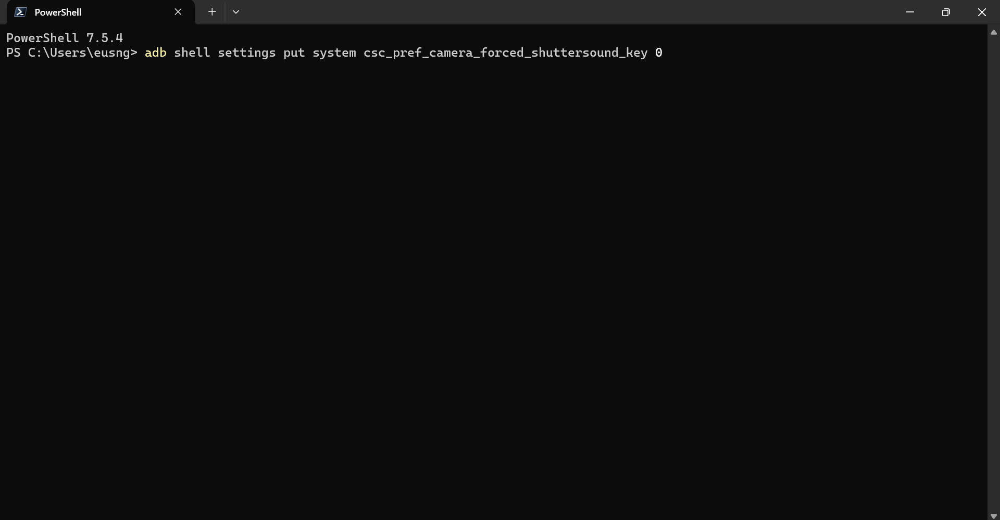
WindowsやMacのターミナルで
adb shell settings put system csc_pref_camera_forced_shuttersound_key 0を実行する。 これにより、シャッター音の動作が海外仕様となる。
13.システム音の音量を0にする
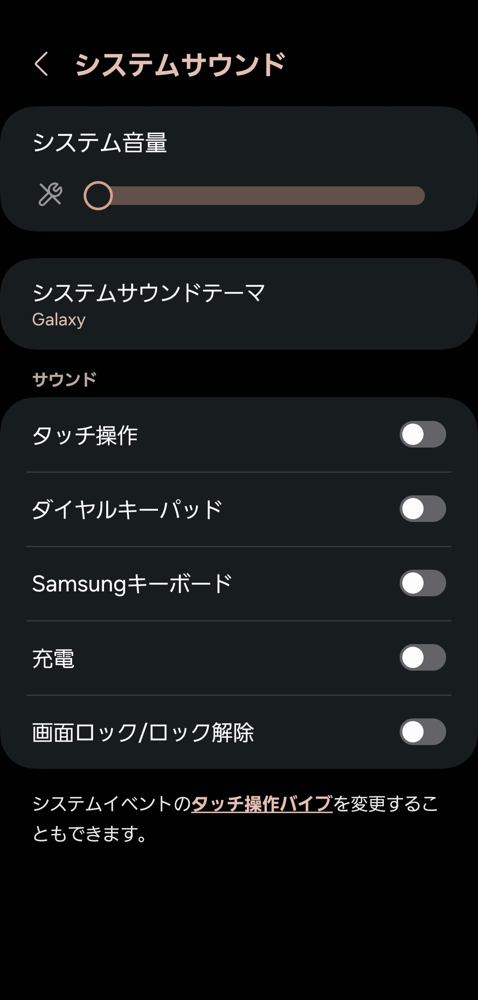
シャッター音の音量はシステム音の音量と同期される。 充電時や画面ロックの解除、タッチ操作の際に鳴るシステム音の音量を0にすることでシャッター音が消える。 システム音の音量はマナーモードや "通知をミュート" をONにすることでも0になる。
デメリット
･アップデートごとにコマンドを実行する必要がある
アップデート後は適用した変更が元に戻されるため、アップデート毎にコマンドを実行する必要がある。
･システム音の音量を0にする必要がある
あまりいないと思うが、普段からシステム音を鳴らしている人はカメラ起動時のみシステム音の音量を0にするオートメーションを作成するなど、工夫する必要がある。
Xiaomi
 Xiaomiより引用
Xiaomiより引用
XiaomiはSoCにDimensityを搭載したキャリア版とオープンマーケット版で、方法は異なるがそれぞれシャッター音が消せる。
Dimensity搭載のキャリア版の方法
1.設定アプリを開く

2. "デバイス情報" を開く
3. "OSバージョン" を7回タップし、パスワードを入力する

4.電話アプリを開く

5. "キーパッド" タブでコードを入力する
電話アプリを開き、
*#*#3646633#*#*を入力する。 これにより、MediaTek Engineer Modeが起動する。

6. "アプリの使用時のみ" をタップする

7. "アプリの使用時のみ" をタップする

8. "許可" をタップする

9. "許可" をタップする

10. "Hardware Testing" タブで "Audio" をタップする

11. "Volume" をタップする

12. "Audio Playback" をタップする

13. "System" を "Enforced_Audible" に変更する

14 "BT A2DP" を "Speaker" に変更する

15. "Index15" の値を "255" から "0" にする

この値がシャッター音の音量になる。
16. "Set" をタップする

17. "OK" をタップする

オープンマーケット版の方法
1.設定アプリを開く
2. "追加設定" をタップする

3. "地域" をタップする

4. "地域" を日本と韓国以外にする

ここで地域を変更しても特に問題はない。
5.カメラアプリを起動する

6.設定画面を開く

7. "一般" タブで "シャッター音" をオフにする

地域が日本と韓国以外に設定されているとこの項目が現れる。
デメリット
･対応機種はオープンマーケット版またはDimensity搭載端末のみ
電話アプリから開くMediaTek Engineer ModeはSoCにDimensityを搭載した端末用のモードのため、Redmi Note 13 Pro 5GのようなSoCにSnapdragonを搭載したキャリア専売のスマホはこの方法が使えず、シャッター音は消せない。
Xperia
 SONYより引用
SONYより引用
Xperiaのオープンマーケット版はシャッター音が消せる。 その方法はカメラアプリの設定を変更する方法と音量を変更する方法の2通りある。
カメラアプリの設定を変更する方法
1.カメラアプリを開く

Xperia 10シリーズや2024年以降のモデルのカメラアプリだけでなく、Xperia 1/5シリーズの2023年モデル以前のPhoto Proアプリも対象である。
3.設定画面を開く

3. "カメラ操作音" をタップする

4. "OFF" をタップする

音量を変更する方法
1.マナーモードまたはサイレントモードに設定する

着信音がオフの状態ではカメラアプリの設定に関わらずシャッター音が鳴らない。
デメリット
･対応機種はオープンマーケット版のみ
UQモバイルやY!mobile、楽天モバイルを含むキャリアが販売するXperiaはシャッター音が消せない。 qUnlock Toolを使ってBLUを許可して実行し、root化してシャッター音を消す方法もあるが、qUnlock Toolは有料でありさらに確実にBLUを許可できる保証もない。
AQUOS
 SHARPより引用
SHARPより引用
AQUOSも2024年以降発売の楽天モバイル版とオープンマーケット版でシャッター音が消せる。
方法
1.カメラアプリを開く
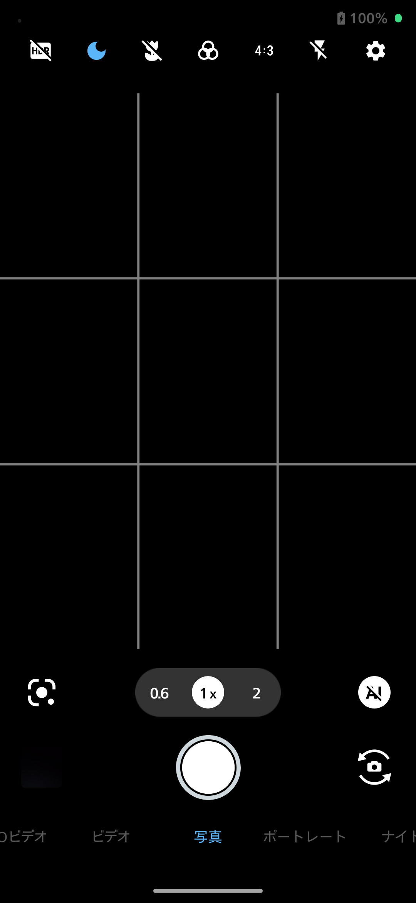
2.設定画面を開く
3. "共通" タブから "シャッター音" をオフにする

デメリット
･対応機種は2024年以降発売のオープンマーケット版のみ
2023年以前のモデル、または楽天モバイルを除くキャリア版ではシャッター音が消せない。 また、Xperiaと違いブートローダーアンロックもできない。
motorola
 motorolaより引用
motorolaより引用
motorolaは本来シャッター音が消せるが、日本のSIMを追加するとシャッター音が消せなくなる。 しかし、日本のSIMを利用している状態でも海外のSIMを追加することで再びシャッター音が消せるようになる。 ここでは海外のSIMカードを用いる方法とeSIMを用いる方法に分けて解説する。
海外のeSIMを用いる方法
この方法では、Ubigiという海外のプリペイドeSIMを追加する。 motorolaのスマホはnanoSIMが2枚利用できる端末および一部モデルでeSIM非対応のため、それらの端末ではこの方法は利用できない。
1.Ubigiをインストールする
以下のリンクからUbigiをインストールする。
2.Ubigiを開く

3. "はじめに進む" をタップする

4. "次へ" をタップする

5. "同意して閉じる" をタップする
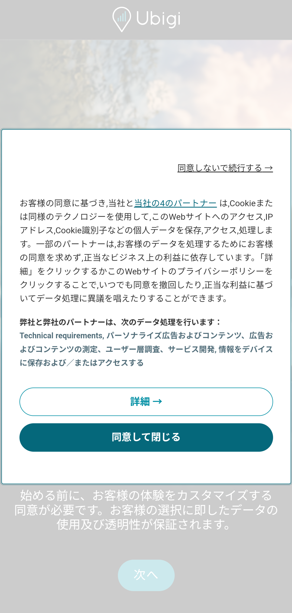
6.Ubigiのアカウントを登録する

7. "スマートフォン" をタップする

8. "新しいUbigi eSIMを購入する" をタップする

9.適当な国や地域のデータプランを選ぶ
2025年11月時点ではアメリカが最安になっている。
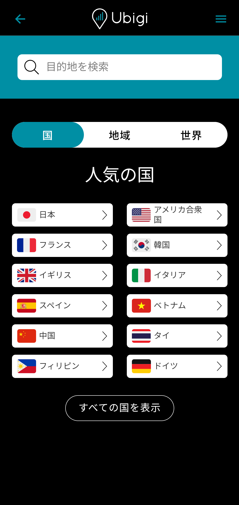

10. "次へ" をタップする
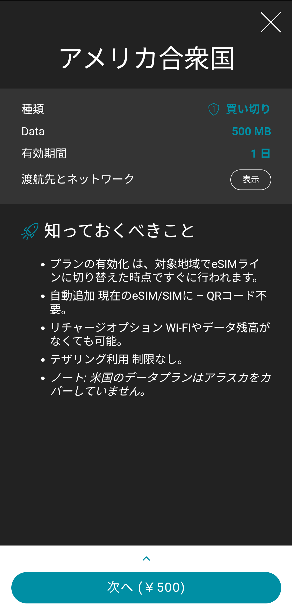
11.画面下のチェックボックスをタップする

12. "このデバイス" をタップする

13. "次へ" をタップする

14. "支払い" をタップし、支払いを完了させる


15. "ダッシュボードを見る" をタップする
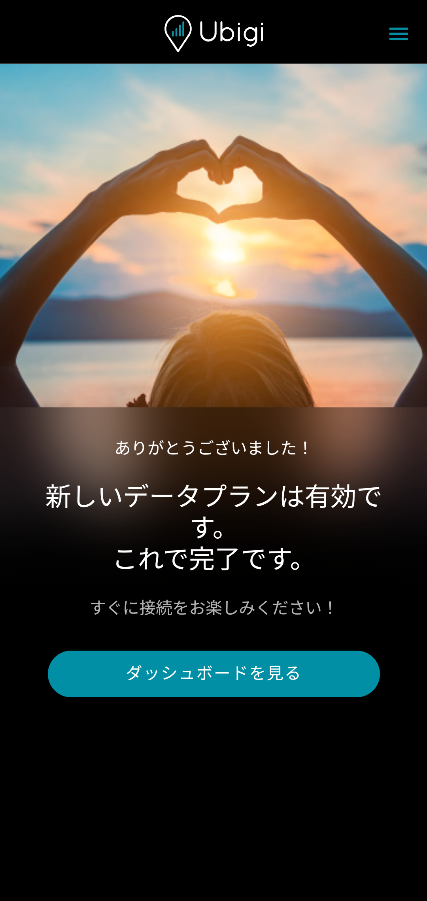
16. "eSIMをインストール" をタップする

17. "続ける" をタップする

18. "はい" をタップする
これによりUbigiのeSIMが端末に追加される
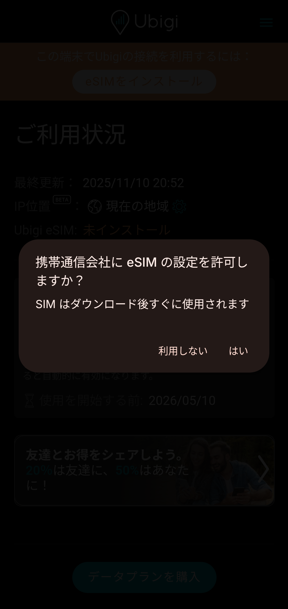
19.カメラアプリを開く
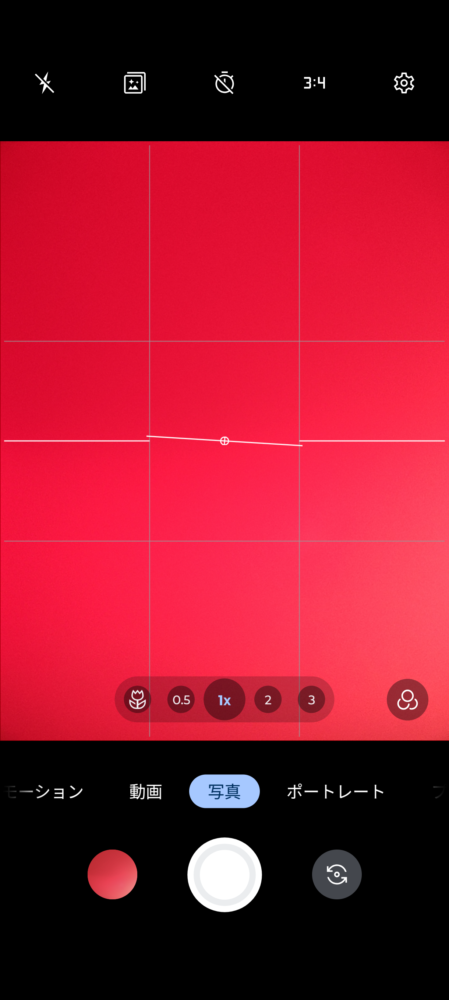
20.設定画面を開く
21. "シャッター音" をオフにする

海外のSIMカードを用いる方法
この方法では、海外のSIMカードを追加する。 motorolaのスマホはeSIM対応端末および一部のモデルでnanoSIMが1枚しか利用できないため、それらの端末ではこの方法は利用できない。
1.海外のSIMカードを挿入する
 Amazonより引用
Amazonより引用
海外のSIMカードを手に入れるにはECで海外のプリペイドSIMを購入するのが良い。
2.カメラアプリを開く
3.設定画面を開く
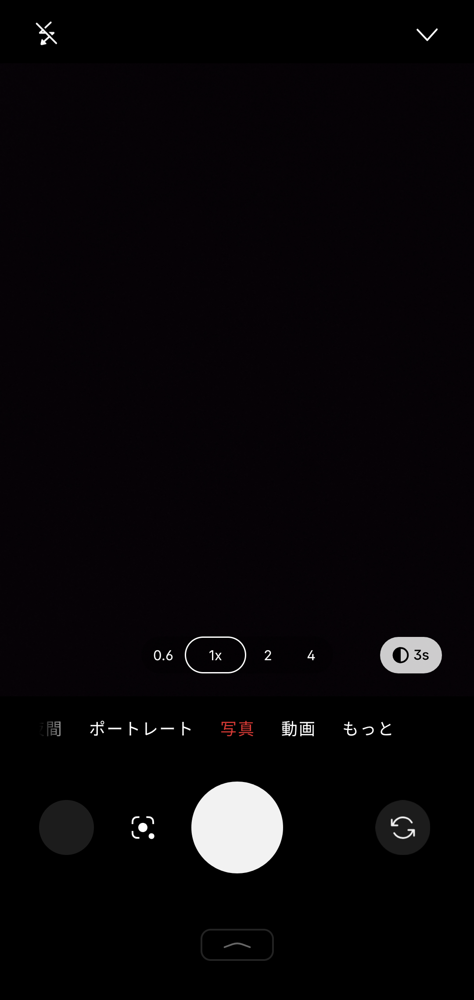
4. "シャッター音" をオフにする
シャッター音の項目が現れない場合
シャッター音をオフにしたあとはバッテリー消耗を抑えるために海外のSIMを無効化しても音は消えたままだが、海外のSIMが無効化されている状態で端末を再起動すると再びシャッター音の項目が消え、音がなるようになる。 それ以外でもこの項目が現れない場合、一度すべてのSIMを無効化してから日本のSIM、海外のSIMの順に有効化してカメラアプリまたは端末を再起動してみる。
デメリット
･対応機種はeSIMまたはnanoSIMが2枚利用できる端末のみ
SoftBank版のrazr 5Gなどのごく一部の機種はどちらにも当てはまらないため、そのような機種でシャッター音を消すには日本のSIMを利用しないようにするしか方法はない。
･海外のSIMを手に入れる必要がある
UbigiのeSIMを購入するにしても、海外のプリペイドSIMを購入するにしてもコストがかかる。
･海外のSIMを無効化した状態で再起動するとシャッター音が鳴るようになる
再起動のたびに海外のSIMを有効化してカメラアプリからシャッター音をオフにしてから海外のSIMを再び無効化するか、バッテリー持ちを犠牲にして海外のSIMを常に有効にするしかない。
･シャッター音が消せる状態はバグのようなもの
本来日本のSIMが有効になっている状態でシャッター音は消せないはずだが、日本のSIMの次に海外のSIMを有効化することでシャッター音の項目が現れるのはもはやバグのようなものである。 よって、アップデートでこの方法が塞がれる可能性が他の機種より高いと思われる。
Nothing Phone
 Nothingより引用
Nothingより引用
Nothing Phoneは本来シャッター音が消せるが、日本のSIMを追加するとシャッター音が消せなくなる。 しかし、日本のSIMを利用している状態でも海外のSIMを追加することで再びシャッター音が消せるようになる。 ここでは海外のSIMカードを用いる方法とeSIMを用いる方法に分けて解説する。
海外のeSIMを用いる方法
この方法では、Ubigiという海外のプリペイドeSIMを追加する。 NothingのスマホでeSIMに対応しているのは2025年以降発売のモデルのみのため、それ以外ではこの方法が利用できない。
1.Ubigiをインストールする
以下のリンクからUbigiをインストールする。
2.Ubigiを開く
3. "はじめに進む" をタップする
4. "次へ" をタップする
5. "同意して閉じる" をタップする
6.Ubigiのアカウントを登録する
7. "スマートフォン" をタップする
8. "新しいUbigi eSIMを購入する" をタップする
9.適当な国や地域のデータプランを選ぶ
2025年11月時点ではアメリカが最安になっている。
10. "次へ" をタップする
11.画面下のチェックボックスをタップする
12. "このデバイス" をタップする
13. "次へ" をタップする
14. "支払い" をタップし、支払いを完了させる
15. "ダッシュボードを見る" をタップする
16. "eSIMをインストール" をタップする
17. "続ける" をタップする
18. "はい" をタップする
これによりUbigiのeSIMが端末に追加される
19.カメラアプリを開く
20.設定画面を開く
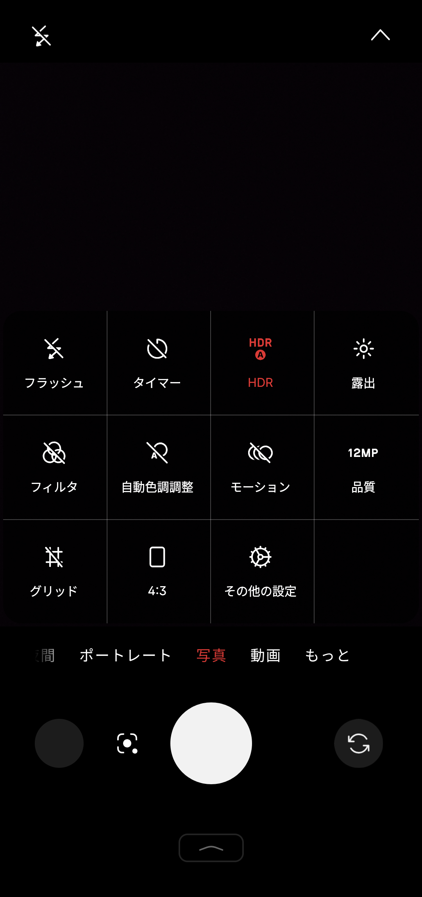
21. "シャッター音" をオフにする

海外のSIMカードを用いる方法
この方法では、海外のSIMカードを追加する。 NothingのスマホはすべてnanoSIMが2枚利用できるため、2024年以前発売のeSIM非対応のスマホでもこの方法でシャッター音をオフにできる。
1.海外のSIMカードを挿入する
海外のSIMカードを手に入れるにはECで海外のプリペイドSIMを購入するのが良い。
2.カメラアプリを開く
3.設定画面を開く
4. "シャッター音" をオフにする
シャッター音の項目が現れない場合
シャッター音をオフにしたあとはバッテリー消耗を抑えるために海外のSIMを無効化しても音は消えたままだが、海外のSIMが無効化されている状態で端末を再起動すると再びシャッター音の項目が消え、音がなるようになる。 それ以外でもこの項目が現れない場合、一度すべてのSIMを無効化してから日本のSIM、海外のSIMの順に有効化してカメラアプリまたは端末を再起動してみる。
デメリット
･海外のSIMを手に入れる必要がある
UbigiのeSIMを購入するにしても、海外のプリペイドSIMを購入するにしてもコストがかかる。
･海外のSIMを無効化した状態で再起動するとシャッター音が鳴るようになる
再起動のたびに海外のSIMを有効化してカメラアプリからシャッター音をオフにしてから海外のSIMを再び無効化するか、バッテリー持ちを犠牲にして海外のSIMを常に有効にするしかない。
･シャッター音が消せる状態はバグのようなもの
本来日本のSIMが有効になっている状態でシャッター音は消せないはずだが、日本のSIMの次に海外のSIMを有効化することでシャッター音の項目が現れるのはもはやバグのようなものである。 よって、アップデートでこの方法が塞がれる可能性が他の機種より高いと思われる。
Nubia
NubiaのZシリーズ、REDMAGICシリーズではシャッター音が消せる。 その方法はXperiaと同様にカメラアプリの設定を変更する方法と音量を変更する方法の2通りある。 ここではREDMAGICでの画像を用いるが、Zシリーズでも同じ手順で実行できる。
カメラアプリの設定を変更する方法
1.カメラアプリを開く
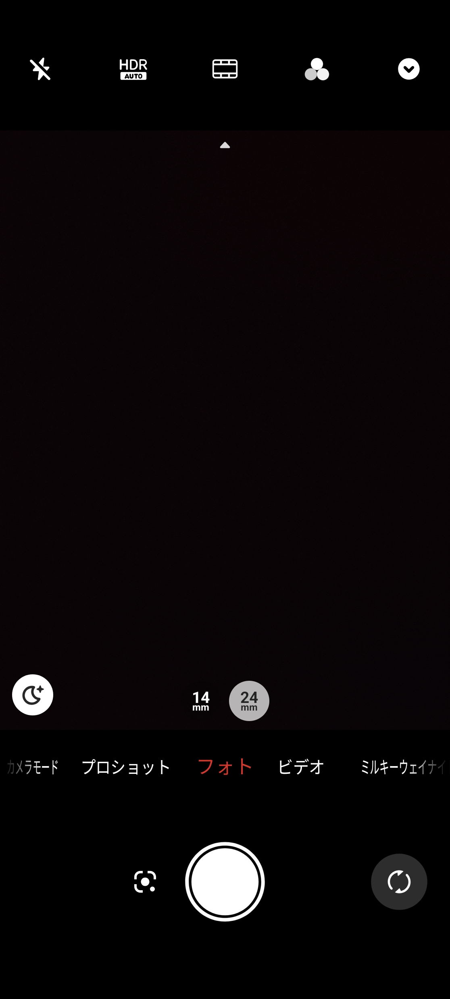
2.設定画面を開く

3. "シャッター音" をオフにする

音量を変更する方法
1.バイブレーションまたはミュートに設定する
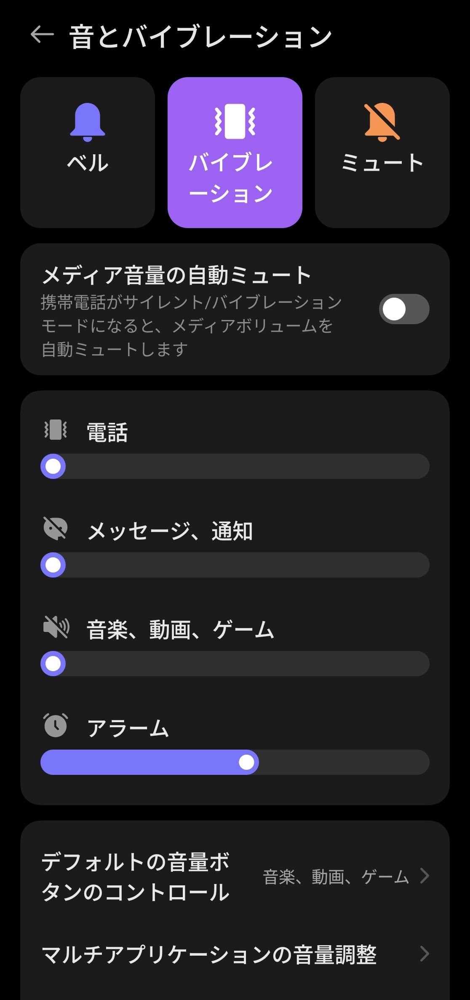
Xperiaと同じく、着信音がオフの状態ではカメラアプリの設定に関わらずシャッター音が鳴らない。
デメリット
･対象機種はZシリーズ、REDMAGICシリーズのみ
nubiaの他のシリーズではシャッター音を消すことができない。 また、親会社のZTEが販売するLiberoなどでもシャッター音は消せない。
シャッター音は何のために存在するのか
日本にはシャッター音は鳴らさなければならないという法律はない。 それにも関わらず、なぜ多くのメーカーが日本で販売する端末でシャッター音を強制するのか。 主な理由として、携帯キャリアによる自主規制がある。 カメラ付きの携帯電話が発売され始めてから、盗撮防止という目的で携帯キャリアによるシャッター音の強制が行われてきた。 これに準じてオープンマーケット版でもシャッター音を強制しているメーカーが多い。 しかし、シャッター音を鳴らしたところで盗撮の防止になるとは考えにくい。 また、先述の通り日本と韓国以外ではシャッター音の強制は行われていない。 よって、この自主規制は無用の長物である。 最近はXperiaやAQUOSもオープンマーケット版でシャッター音を消せるようになった。 今後このような流れが日本のスマホ業界で広がっていくことを期待したい。
プロフィール

高度情報社会の最先端を駆け抜ける